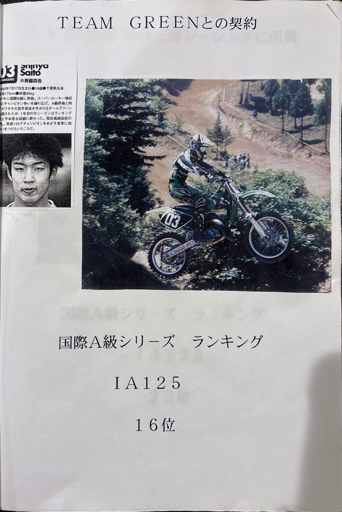
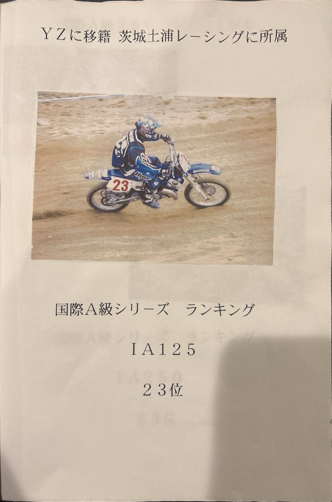
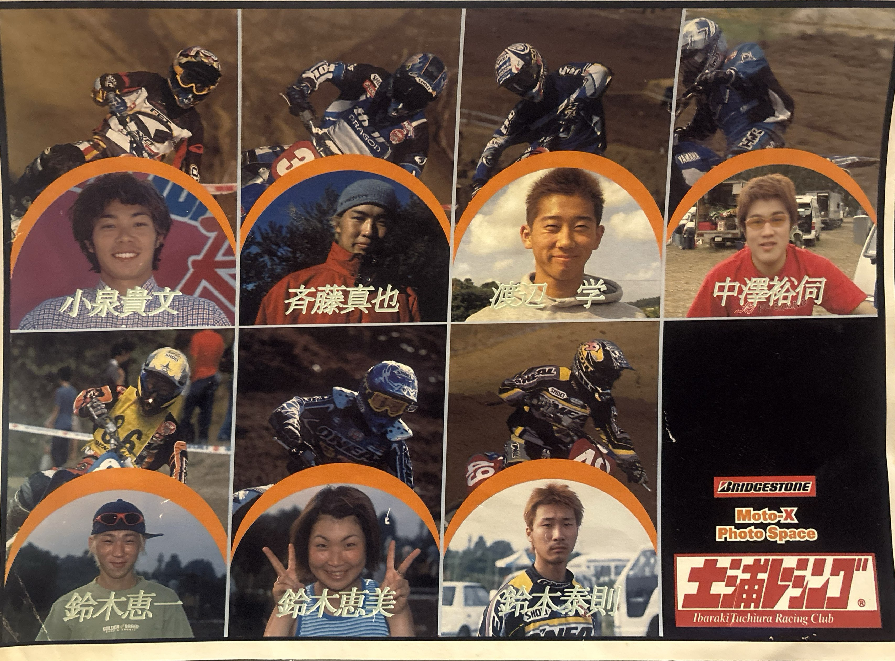
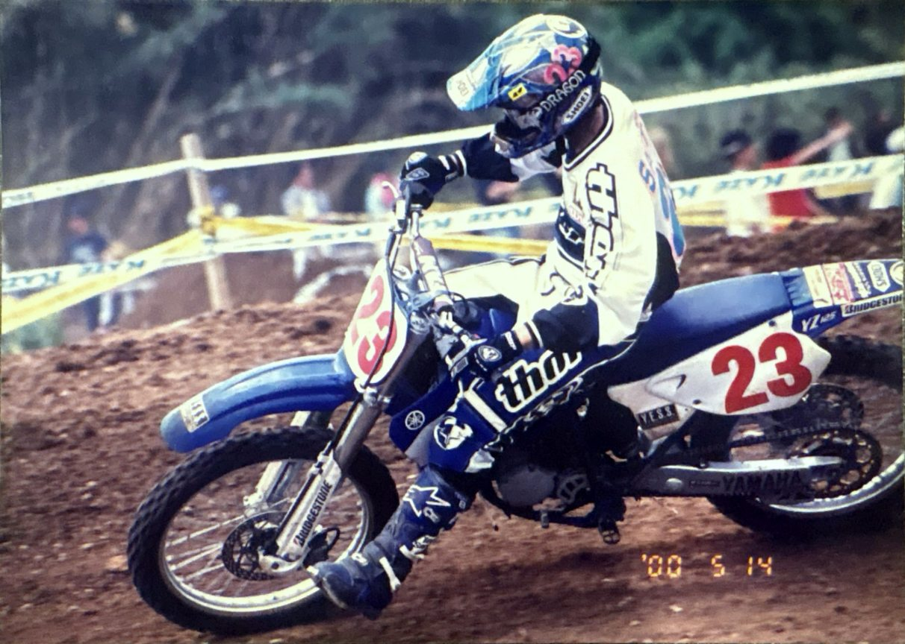
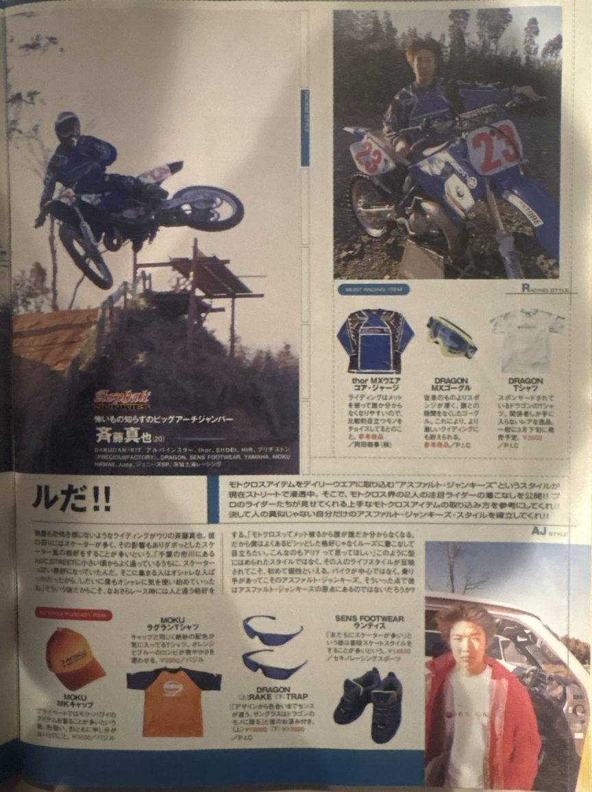

1988
少年ライダーとして挑戦
NMA全米選手権MX・日本予選シリーズ、ピーウィークラスで第3位。モトクロスに親しんだ少年時代の記録。
家族保管資料：1988年の記録
祖父から父へ、そして息子たちへ。3世代にわたり受け継がれるモトクロスへの情熱。真也監督の少年時代から国際A級、そして現在のBIG ARCHまでの歩みを、写真と記録で振り返ります。
モトクロスを走り、家族の歴史の原点となった第一世代。
TEAM GREEN・YAMAHAで全日本モトクロスを戦った元国際A級ライダー。現在はチーム監督。
父の経験を受け継ぎ、新たなレースに挑む第三世代。
NMA全米選手権MX・日本予選シリーズ、ピーウィークラスで第3位。モトクロスに親しんだ少年時代の記録。
家族保管資料：1988年の記録1994年のKIDS SUPER CROSSで年間シリーズチャンピオンを獲得。
家族保管資料：1994年シリーズチャンピオン
全日本モトクロス選手権 IB125年間2位、IB250年間3位。IB125の年間2位はMFJ認定証でも確認できる。
1997年 MFJ認定証（IB125年間2位）
カワサキTEAM GREENと契約。1999年モデルの先行マシンで全日本モトクロス選手権に参戦し、IA125年間16位。
家族保管資料：TEAM GREEN時代
YAMAHA YZで茨城土浦レーシングクラブへ移籍。全日本モトクロス選手権IA125・IA250に参戦し、第3戦九州大会ではIA125第1ヒート4位を獲得。
家族保管資料：YAMAHA時代の走行写真

全日本IA125年間ランキング19位（36ポイント）。第6戦北海道大会ではIA125クラス6位入賞。
2000年5月14日の日付が写る写真
茨城土浦レーシングクラブ所属で全日本モトクロス選手権・国際A級250ccクラスにゼッケン30番で参戦。年間ランキング23位。怪我を機に現役生活に一区切りをつけた。
MFJ 2001年 全日本モトクロス選手権公式ランキング／家族保管資料
現在はBIG ARCHの監督として蓮・琉生を支える。真也監督のお父さんから始まったモトクロスの歴史は、親子3世代へと受け継がれている。
家族保管資料：現役時代の写真